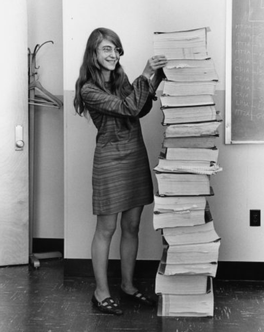

Margaret Hamilton con el código fuente del Programa de Orientación Apollo
Programación y Astronomía: La base de la exploración espacial
Navegación Astronómica: La astronomía ofrece conocimientos fundamentales sobre la posición de los cuerpos
celestes (planetas, estrellas, etc.), que son esenciales para la navegación espacial. En el caso del
Programa Apollo, la programación se utilizó para crear algoritmos que calcularan trayectorias precisas de
las naves espaciales, usando principios astronómicos.
Software para la navegación: El Programa de Orientación del Apollo incluía software que ayudaba a los
astronautas a calcular las rutas que debían seguir para llegar a la Luna y regresar a la Tierra. Los
cálculos astronómicos eran la base, pero los sistemas informáticos y la programación convertían estos
cálculos en instrucciones para los motores y otros sistemas de la nave.
La programación y la astronomía tienen una relación directa cuando se trata de la exploración espacial. La
astronomía proporciona las reglas científicas y los principios matemáticos sobre los cuerpos celestes y el
espacio exterior, mientras que la programación transforma esas reglas en software que controla los sistemas
de las naves espaciales. Margaret Hamilton, a través de su trabajo en el Programa de Orientación del Apollo,
hizo historia al desarrollar software confiable que permitió a los astronautas llegar a la Luna y regresar a
salvo, demostrando que la programación es esencial para la exploración del cosmos.